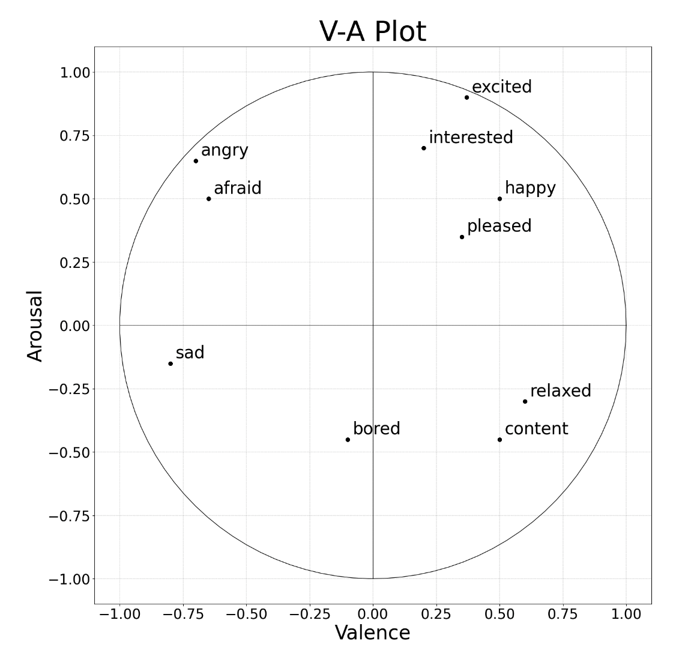

EmotionGUI
Home
Annotation
Visualise
Live Audio
Help
EmotionGUI
Annotation
Visualise
Live Audio
Plot CSV File
Upload CSV file:
Previous
Next
Upload File
Plot CSV
Plot WAV File
Upload WAV/MP3 file:
Extract Features
Choose a WAV audio file and click 'Play' button to start playing

Save Plot
Clear Plot
import matplotlib.pyplot as plt import numpy as np import math from pyodide.ffi import create_proxy, to_js from js import valence_arr, arousal_arr, time_arr # Define slice colors for the plot slice_colors = ['#66ff33', '#ffcc00', '#ff751a', '#ff3333','#751aff', '#0066ff', '#00e6e6', '#009933'] # Declare fig and axes as global variables global fig, axes fig = plt.figure(figsize=(20, 18)) axes = fig.subplots() button_clicked = False def initialize_plot(): # Initialize the plot with default settings global fig, axes plt.title("V-A Plot", fontsize=50) plt.xlabel("Valence", fontsize=35) plt.ylabel("Arousal", fontsize=35) # Plot a circle theta = np.linspace(0, 2 * np.pi, 100) radius = 1 a = radius * np.cos(theta) b = radius * np.sin(theta) axes.plot(a, b, color='k', linewidth=1) axes.set_aspect(1) # Draw axes axes.hlines(y=0, xmin=-1, xmax=1, linewidth=0.7, color='k') axes.vlines(x=0, ymin=-1, ymax=1, linewidth=0.7, color='k') # Set tick parameters axes.tick_params(axis='both', which='major', labelsize=25) axes.tick_params(axis='both', which='minor', labelsize=25) # Add landmark emotions with corresponding valence and arousal values landmarkEmotions = ['angry', 'afraid', 'sad', 'bored', 'excited', 'interested', 'happy', 'pleased', 'relaxed', 'content'] landmarkValence = (-0.7, -0.65, -0.8, -0.1, 0.37, 0.2, 0.5, 0.35, 0.6, 0.5) landmarkArousal = (0.65, 0.5, -0.15, -0.45, 0.9, 0.7, 0.5, 0.35, -0.3, -0.45) # Scatter plot landmarks and label them for point in range(len(landmarkEmotions)): axes.scatter(landmarkValence, landmarkArousal, color='black', s=40) axes.text(landmarkValence[point] + 0.02, landmarkArousal[point] + 0.02, landmarkEmotions[point], fontsize=30) # Add gridlines axes.yaxis.grid(color='grey', linestyle='dashed', linewidth=0.3) axes.xaxis.grid(color='grey', linestyle='dashed', linewidth=0.3) # Display the initial plot display(fig, target="plot") def update_plot(): # Update the plot with new data using valence_arr and arousal_arr global fig, axes, valence_arr, arousal_arr if button_clicked: global fig, axes plt.title("V-A Plot", fontsize=50) plt.xlabel("Valence", fontsize=35) plt.ylabel("Arousal", fontsize=35) # Plot a circle theta = np.linspace(0, 2 * np.pi, 100) radius = 1 a = radius * np.cos(theta) b = radius * np.sin(theta) axes.plot(a, b, color='k', linewidth=1) axes.set_aspect(1) # Draw axes axes.hlines(y=0, xmin=-1, xmax=1, linewidth=0.7, color='k') axes.vlines(x=0, ymin=-1, ymax=1, linewidth=0.7, color='k') # Set tick parameters axes.tick_params(axis='both', which='major', labelsize=25) axes.tick_params(axis='both', which='minor', labelsize=25) # Add landmark emotions with corresponding valence and arousal values landmarkEmotions = ['angry', 'afraid', 'sad', 'bored', 'excited', 'interested', 'happy', 'pleased', 'relaxed', 'content'] landmarkValence = (-0.7, -0.65, -0.8, -0.1, 0.37, 0.2, 0.5, 0.35, 0.6, 0.5) landmarkArousal = (0.65, 0.5, -0.15, -0.45, 0.9, 0.7, 0.5, 0.35, -0.3, -0.45) # Scatter plot landmarks and label them for point in range(len(landmarkEmotions)): axes.scatter(landmarkValence, landmarkArousal, color='black', s=40) axes.text(landmarkValence[point] + 0.02, landmarkArousal[point] + 0.02, landmarkEmotions[point], fontsize=30) # Add gridlines axes.yaxis.grid(color='grey', linestyle='dashed', linewidth=0.3) axes.xaxis.grid(color='grey', linestyle='dashed', linewidth=0.3) # Update the plot with new data using valence_arr and arousal_arr for point in range(len(valence_arr)): # Calculate point opacity and color opacity = calculate_opacity(time_arr, time_arr[point]) colour = get_color(valence_arr[point], arousal_arr[point]) # Calculate pointer size based on time min_size = 100 # Minimum pointer size max_size = 3000 # Maximum pointer size size = max_size - (max_size - min_size) * (time_arr[point] / max(time_arr)) border_color = 'black' axes.scatter(valence_arr[point], arousal_arr[point], color=colour, s=size, alpha=opacity, edgecolor=border_color) # Display the updated plot display(fig, target="plot") fig.canvas.flush_events() def plot_csv(): # Button click event to trigger updating the plot global button_clicked button_clicked = True update_plot() def calculate_opacity(time_array, current_time): # Calculate opacity based on the current time min_opacity = 0.1 max_opacity = 1 # Find the corresponding index of the current time in the time array index = next((i for i, time in enumerate(time_array) if time >= current_time), -1) # Calculate progress as a value between 0 and 1 based on the index progress = 1 if index == -1 else index / (len(time_array) - 1) # Calculate the current opacity based on the progress current_opacity = min_opacity + (max_opacity - min_opacity) * progress return current_opacity def get_color(x, y): # Calculate color index based on the angle angle = math.atan2(y, x) angle_in_degrees = (angle + 2 * math.pi if angle < 0 else angle) * (180 / math.pi) color_index = math.floor(angle_in_degrees / 45) % 8 return slice_colors[color_index] # Initial plot creation # initialize_plot() def predict(self): # Define scaler, feature number and number of step looking back scale_range = (0, 1) scaler = MinMaxScaler(feature_range=scale_range) n_steps = 24 # exclude the current step n_features = 7 transformTarget = True testingDataset = self.currentDf testingDataset = testingDataset[['RMS', 'F0', 'MFCC1', 'MFCC2', 'MFCC3', 'MFCC4', 'MFCC5']] # load and build testing dataset values = testingDataset.values # normalize features testingScaled = scaler.fit_transform(values) # frame as supervised learning reframed = self.series_to_supervised(testingScaled, n_steps, 1) print(reframed.shape) values = reframed.values test = values test_X = test # reshape input to be 3D [samples, timesteps (n_steps before + 1 current step), features] test_X = test_X.reshape((test_X.shape[0], n_steps + 1, n_features)) arousalModelPath = 'models/saves/bi-lstm/mArousal.hdf5' valenceModelPath = 'models/saves/bi-lstm/mValence.hdf5' arousalModel = keras.models.load_model(arousalModelPath) valenceModel = keras.models.load_model(valenceModelPath) # make a prediction if transformTarget: inv_yPredict = arousalModel.predict(test_X) yPredict = arousalModel.predict(test_X) self.a_pred_test_list = [i for i in yPredict] # make a prediction if transformTarget: inv_yPredict = valenceModel.predict(test_X) yPredict = valenceModel.predict(test_X) self.v_pred_test_list = [i for i in yPredict] self.time_array = self.currentDf[['Time']].to_numpy() self.time_array = self.time_array[24:len(self.time_array)]